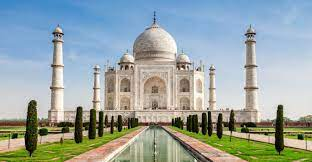

tag mahal

El Taj Mahal (hindi: ??? ??? Taj Mahal, urdu: ??? ??? Tay Mahal, 'Corona de los palacios'; /t??? m?'h?l/)1?2? es un monumento funerario construido entre 1632 y 1654 en la ciudad de Agra, estado de Uttar Pradesh (India), a orillas del río Yamuna, por el emperador musulmán Shah Jahan de la dinastía mogol. El imponente conjunto de edificios se erigió en honor de su esposa favorita, Arjumand Banu Begum —más conocida como Mumtaz Mahal—, que murió en el parto de su decimocuarto hijo. Se estima que en su construcción trabajaron unos 20 000 obreros bajo dirección de un conjunto de arquitectos liderados por el arquitecto de la corte, Ustad Ahmad Lahori.